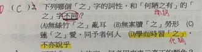

原卷第 5 張｜國中國文（四）第八課〈陋室銘〉｜三、選擇題 第 2 題
完整原題
先想一想，再查看答案、解說與原圖
逐項解析
| 選項與原句 | 判讀 | 句意與判斷理由 |
|---|---|---|
| (A) 無絲竹「之」亂耳 | 助詞 | 沒有奏樂的聲音擾亂耳朵。 「絲竹」借指奏樂的聲音；「之」連接主詞「絲竹」與謂語「亂耳」，無獨立實義。詞性和題幹同為助詞，所以不能選。 |
| (B) 無案牘「之」勞形 | 助詞 | 沒有官府公文使身體勞累。 「案牘」指官府公文；「勞形」是使身體勞累。「之」連接主詞與謂語，無獨立實義。詞性和題幹相同，所以不能選。 |
| (C) 蓮「之」愛，同予者何人 | 助詞 | 對蓮花的喜愛，和我相同的還有什麼人呢？ 「蓮之愛」可還原為「愛蓮」，「之」標示賓語前置；「予」指我。這個「之」與題幹同為助詞，不能選。 |
| (D) 學而時習「之」，不亦說乎 | 代詞 | 學習之後，按時溫習所學的內容，不也是很愉快嗎？ 「之」代替「所學的內容」，是動詞「習」的賓語，具有指代作用。它是代詞，與題幹的助詞不同，應選這一項。 |
詳細說明與解題步驟
一、先看清楚題目問什麼
本題問「詞性不同」，不是問「助詞的細部作用是否完全一樣」。先判斷每一個「之」屬於助詞、代詞或動詞，再作比較。
二、判讀題幹：「何陋之有」
這句的通常語序是「有何陋」，意思是「有什麼簡陋的呢？」。「何陋」是「有」的賓語，被移到動詞前面；中間的「之」用來標示賓語前置，沒有可單獨翻譯的實義，詞性是助詞。不能把這個「之」解釋成「它」。
三、為什麼原本選的 C 不對
「蓮之愛」可以還原為「愛蓮」，意思是「對蓮花的喜愛」；「同予者何人」是問「和我有相同喜好的是什麼人？」。這裡的「之」也是用來標示賓語前置的助詞，和「何陋之有」同類，所以不符合題目要求的「不同」。
四、為什麼 D 才是答案
「學而時習之」意思是「學習之後，按時溫習所學的內容」。「習」是動詞，「之」代替前面學過的知識或道理，放在動詞後面作賓語。把它換成「所學的內容」，句意仍然完整，因此它是代詞。句中的「說」通「悅」，「不亦說乎」意為「不也是很愉快嗎？」。
五、A、B 與題幹有何差別
A、B 的「之」放在主詞和謂語之間，連接前後成分，使「絲竹亂耳」「案牘勞形」這類結構不獨立成句，國中可先記為「助詞，無義」。它們的細部語法作用與「何陋之有」不完全相同，但詞性仍然相同，都是助詞，因此也不能選。
作答順序
① 圈出題目要求：詞性「不同」。
② 判斷題幹：「何陋之有」＝助詞。
③ 比較選項：A、B、C＝助詞；D＝代詞。
④ 選 D，並能說出它代替「所學的內容」。
核對註記：已依第 5 張原卷逐字補上第 2 題與全部選項。原 AI 報告把 C 誤記為「牡丹之愛」，現已依卷面改為「蓮之愛，同予者何人」。本題無附圖，也不依賴另附閱讀題組，題目與引句已完整列出。
原圖（僅本題）
